Continuous terrain · reproducible seed gallery
Prototype diagnostics. Review warning fields and morphology, not just coverage.
Kriemhild · earthlike
Land 25.5% · 5 continents · largest share 27.2%
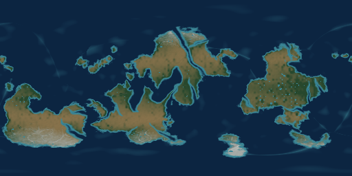
natural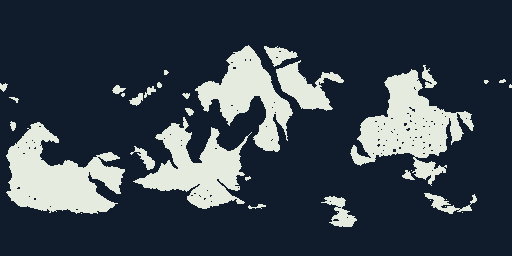
mask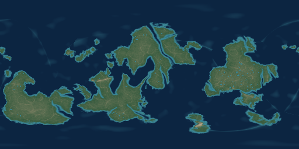
elevation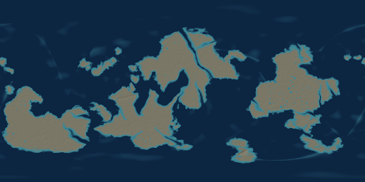
bathymetry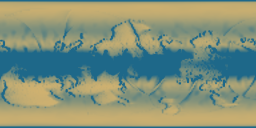
precipitation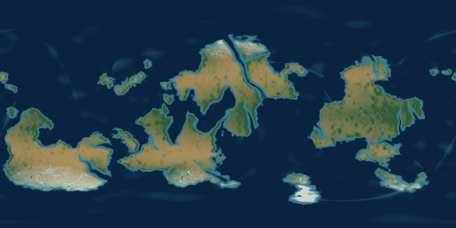
biomegallery-001 · earthlike
Land 22.9% · 3 continents · largest share 52.6%
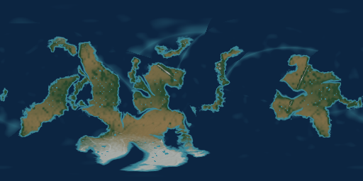
natural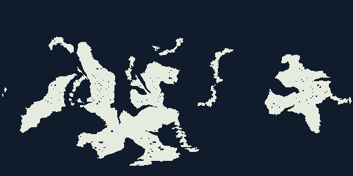
mask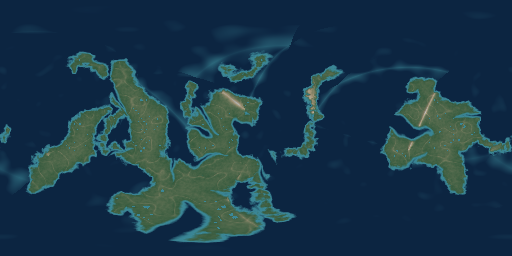
elevation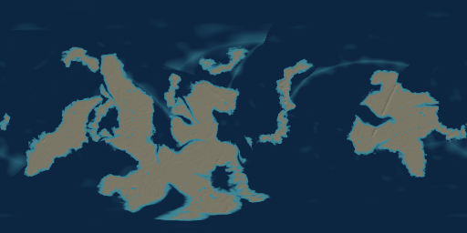
bathymetry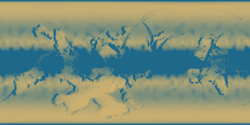
precipitation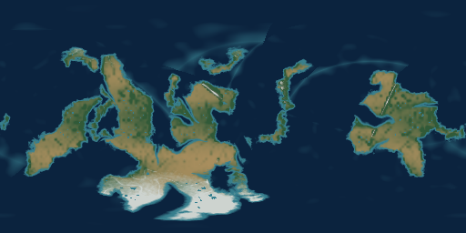
biomegallery-002 · earthlike
Land 25.3% · 4 continents · largest share 32.5%
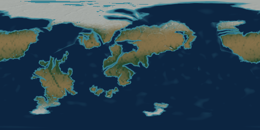
natural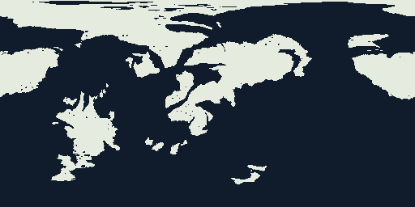
mask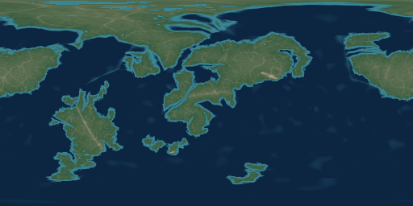
elevation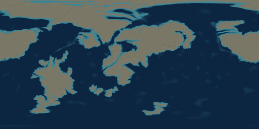
bathymetry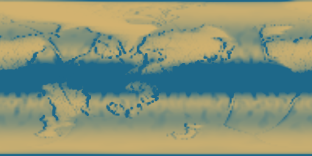
precipitation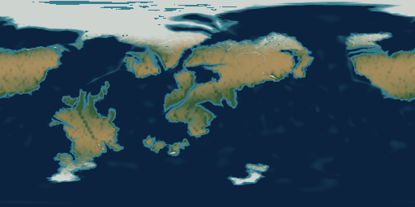
biomegallery-003 · earthlike
Land 27.2% · 6 continents · largest share 23.5%
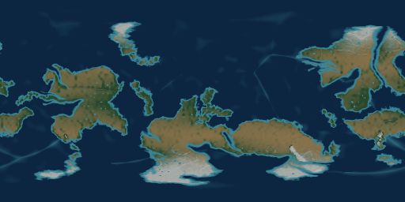
natural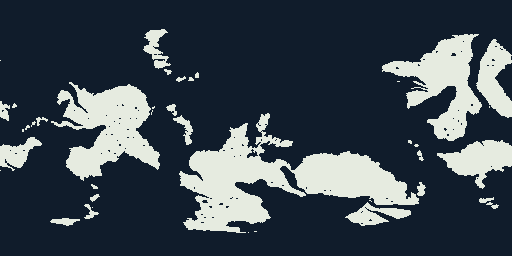
mask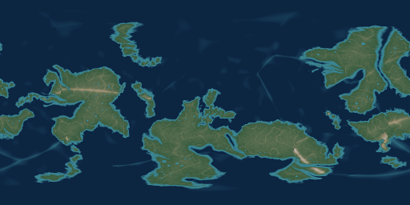
elevation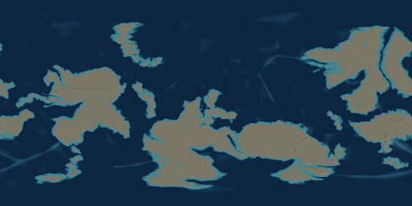
bathymetry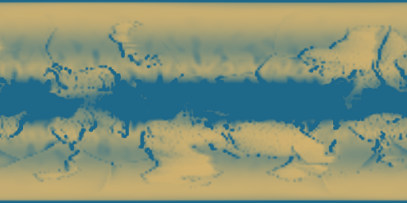
precipitation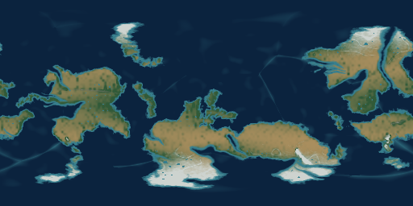
biomegallery-004 · earthlike
Land 24.3% · 5 continents · largest share 23.2%
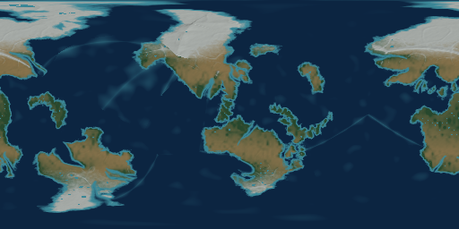
natural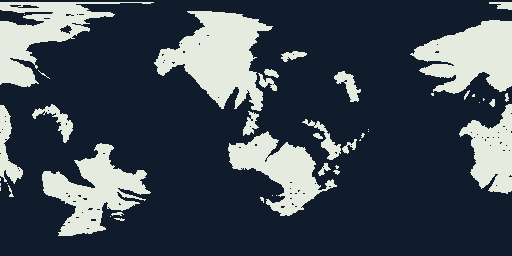
mask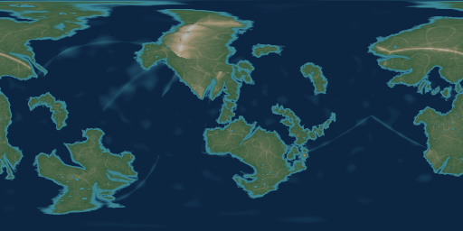
elevation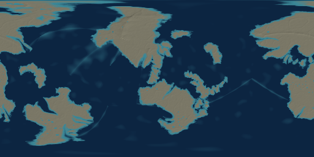
bathymetry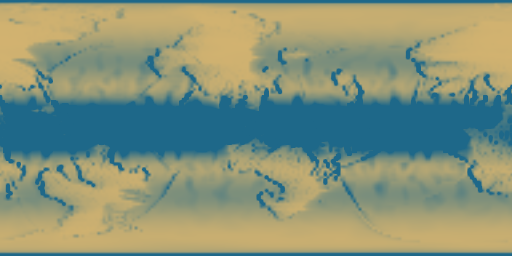
precipitation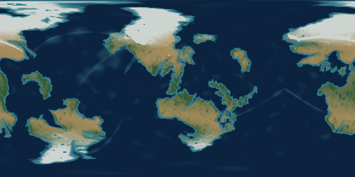
biomegallery-005 · earthlike
Land 21.4% · 4 continents · largest share 28.5%
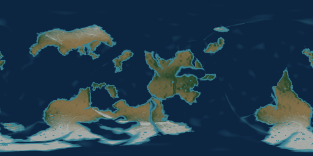
natural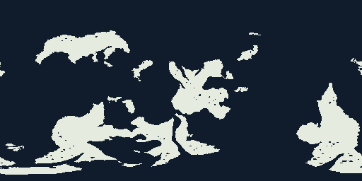
mask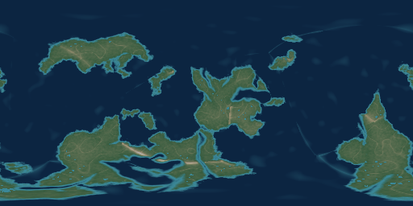
elevation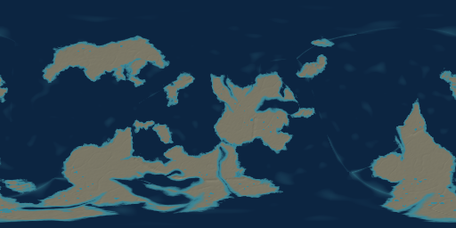
bathymetry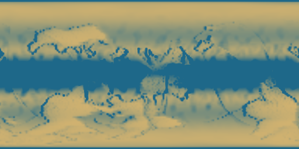
precipitation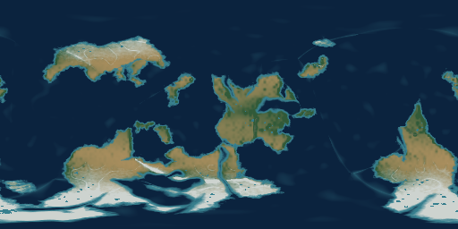
biomegallery-006 · earthlike
Land 26.1% · 4 continents · largest share 44.7%
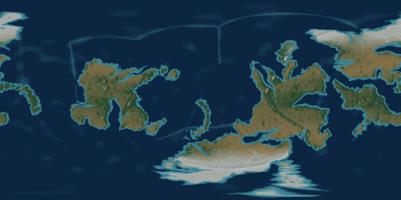
natural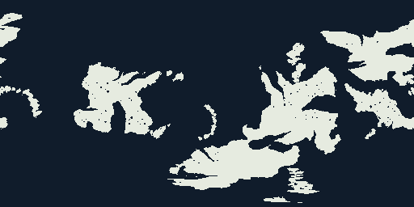
mask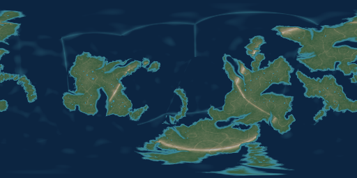
elevation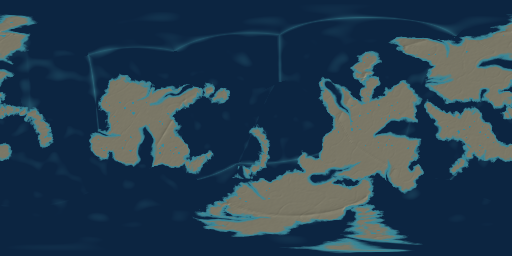
bathymetry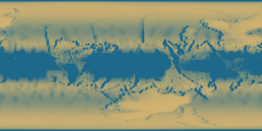
precipitation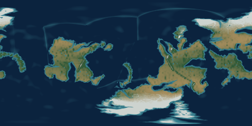
biomegallery-007 · archipelago
Land 20.5% · 7 continents · largest share 16.7%
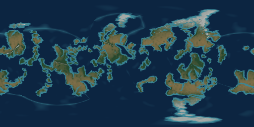
natural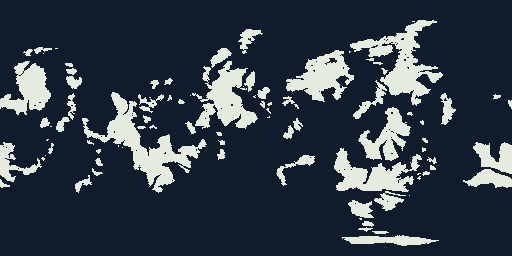
mask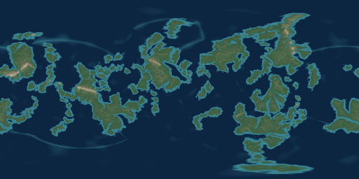
elevation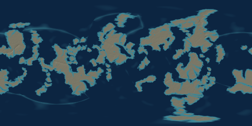
bathymetry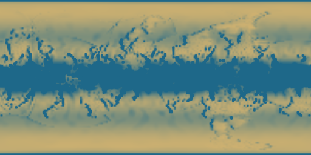
precipitation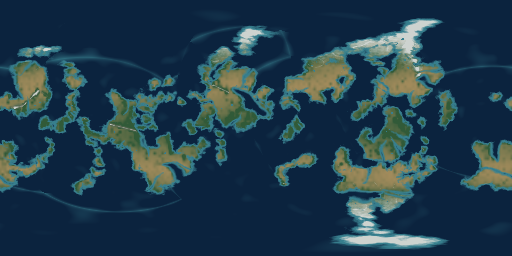
biomegallery-008 · supercontinent
Land 11.3% · 1 continents · largest share 89.7%
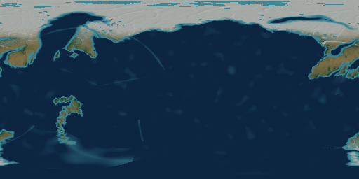
natural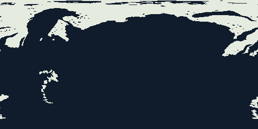
maskelevationbathymetryprecipitationbiomegallery-009 · arid
Land 29.8% · 5 continents · largest share 27.0%
naturalmaskelevationbathymetryprecipitationbiomegallery-010 · earthlike
Land 24.2% · 5 continents · largest share 23.1%
naturalmaskelevationbathymetryprecipitationbiomegallery-011 · earthlike
Land 21.8% · 4 continents · largest share 46.3%
naturalmaskelevationbathymetryprecipitationbiomegallery-012 · earthlike
Land 29.4% · 2 continents · largest share 82.6%
naturalmaskelevationbathymetryprecipitationbiomegallery-013 · earthlike
Land 28.1% · 2 continents · largest share 61.1%
naturalmaskelevationbathymetryprecipitationbiomegallery-014 · earthlike
Land 25.3% · 4 continents · largest share 38.2%
naturalmaskelevationbathymetryprecipitationbiomegallery-015 · earthlike
Land 22.7% · 4 continents · largest share 42.0%
naturalmaskelevationbathymetryprecipitationbiomegallery-016 · earthlike
Land 21.4% · 3 continents · largest share 53.5%
naturalmaskelevationbathymetryprecipitationbiomegallery-017 · archipelago
Land 21.2% · 5 continents · largest share 22.5%
naturalmaskelevationbathymetryprecipitationbiomegallery-018 · supercontinent
Land 16.3% · 1 continents · largest share 83.4%
naturalmaskelevationbathymetryprecipitationbiomegallery-019 · arid
Land 26.2% · 3 continents · largest share 55.2%
naturalmaskelevationbathymetryprecipitationbiomegallery-020 · earthlike
Land 26.5% · 6 continents · largest share 23.2%
naturalmaskelevationbathymetryprecipitationbiomegallery-021 · earthlike
Land 25.7% · 4 continents · largest share 40.0%
naturalmaskelevationbathymetryprecipitationbiomegallery-022 · earthlike
Land 20.7% · 3 continents · largest share 38.7%
naturalmaskelevationbathymetryprecipitationbiomegallery-023 · earthlike
Land 25.8% · 3 continents · largest share 63.5%
naturalmaskelevationbathymetryprecipitationbiomegallery-024 · earthlike
Land 22.4% · 4 continents · largest share 35.3%
naturalmaskelevationbathymetryprecipitationbiomegallery-025 · earthlike
Land 30.2% · 4 continents · largest share 43.3%
naturalmaskelevationbathymetryprecipitationbiomegallery-026 · earthlike
Land 24.8% · 4 continents · largest share 35.2%
naturalmaskelevationbathymetryprecipitationbiomegallery-027 · archipelago
Land 21.4% · 5 continents · largest share 10.7%
naturalmaskelevationbathymetryprecipitationbiomegallery-028 · supercontinent
Land 11.4% · 2 continents · largest share 63.5%
naturalmaskelevationbathymetryprecipitationbiomegallery-029 · arid
Land 23.3% · 4 continents · largest share 41.2%
naturalmaskelevationbathymetryprecipitationbiomegallery-030 · earthlike
Land 30.4% · 4 continents · largest share 30.8%
naturalmaskelevationbathymetryprecipitationbiomegallery-031 · earthlike
Land 27.7% · 5 continents · largest share 19.7%
naturalmaskelevationbathymetryprecipitationbiomegallery-032 · earthlike
Land 22.2% · 5 continents · largest share 24.4%
naturalmaskelevationbathymetryprecipitationbiomegallery-033 · earthlike
Land 27.9% · 3 continents · largest share 47.2%
naturalmaskelevationbathymetryprecipitationbiomegallery-034 · earthlike
Land 22.7% · 5 continents · largest share 28.1%
naturalmaskelevationbathymetryprecipitationbiomegallery-035 · earthlike
Land 24.1% · 5 continents · largest share 24.7%
naturalmaskelevationbathymetryprecipitationbiomegallery-036 · earthlike
Land 30.4% · 4 continents · largest share 45.6%
naturalmaskelevationbathymetryprecipitationbiomegallery-037 · archipelago
Land 22.5% · 6 continents · largest share 18.1%
naturalmaskelevationbathymetryprecipitationbiomegallery-038 · supercontinent
Land 13.2% · 2 continents · largest share 63.8%
naturalmaskelevationbathymetryprecipitationbiomegallery-039 · arid
Land 27.6% · 5 continents · largest share 36.2%
naturalmaskelevationbathymetryprecipitationbiomegallery-040 · earthlike
Land 33.2% · 3 continents · largest share 49.3%
naturalmaskelevationbathymetryprecipitationbiomegallery-041 · earthlike
Land 29.6% · 4 continents · largest share 42.5%
naturalmaskelevationbathymetryprecipitationbiomegallery-042 · earthlike
Land 22.4% · 5 continents · largest share 27.2%
naturalmaskelevationbathymetryprecipitationbiomegallery-043 · earthlike
Land 27.6% · 5 continents · largest share 22.8%
naturalmaskelevationbathymetryprecipitationbiomegallery-044 · earthlike
Land 18.9% · 6 continents · largest share 20.1%
naturalmaskelevationbathymetryprecipitationbiomegallery-045 · earthlike
Land 28.3% · 3 continents · largest share 49.5%
naturalmaskelevationbathymetryprecipitationbiomegallery-046 · earthlike
Land 30.6% · 4 continents · largest share 35.6%
naturalmaskelevationbathymetryprecipitationbiomegallery-047 · archipelago
Land 19.2% · 5 continents · largest share 19.6%
naturalmaskelevationbathymetryprecipitationbiomegallery-048 · supercontinent
Land 14.9% · 2 continents · largest share 44.0%
naturalmaskelevationbathymetryprecipitationbiomegallery-049 · arid
Land 25.6% · 5 continents · largest share 27.4%
naturalmaskelevationbathymetryprecipitationbiome